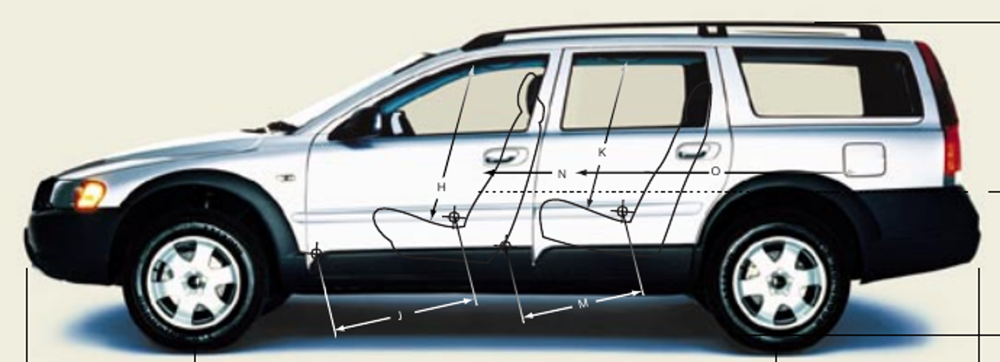
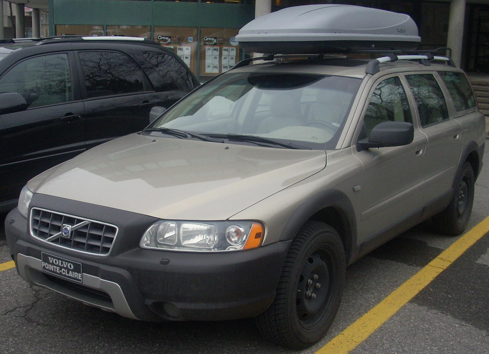
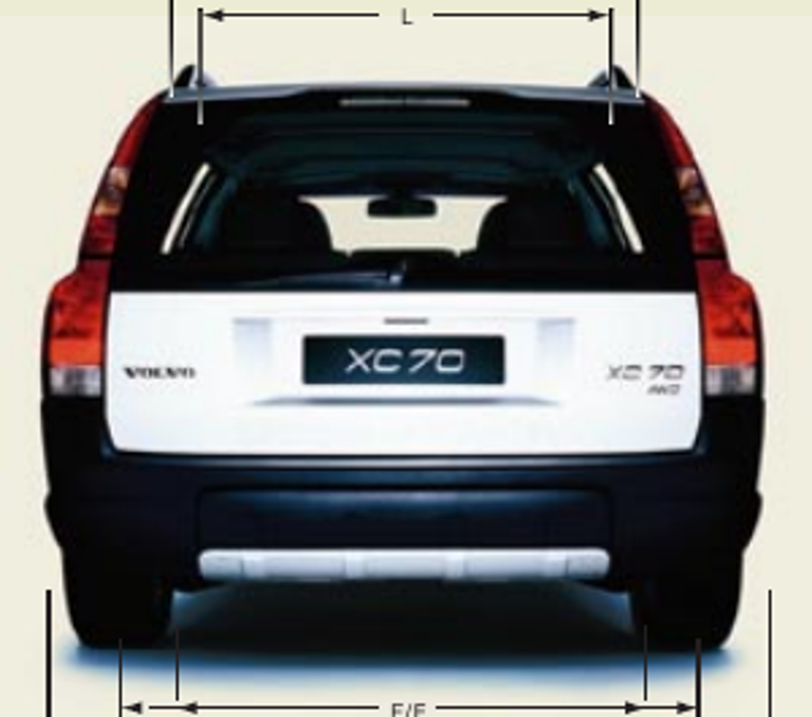
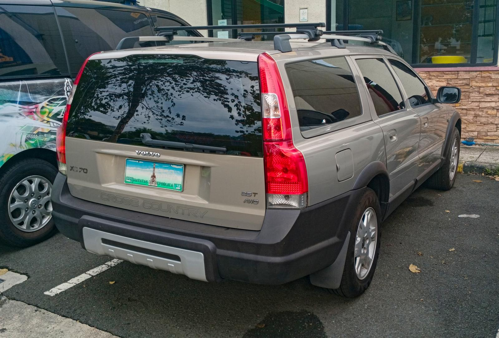

Volvo XC70 P2 · two shared-body variants
MY2005–2006 civilian silver and a simplified Swedish police configuration. One closed body, one geometry source, variant paint and equipment. Five fixed views per car; tap any image for its full PNG.
Exact factory geometry and physical iPad GPU performance are unverified. The side reference has perspective and predates the facelift; police decoration is an approximate post-2005 scheme supported by later P2 service photos. No game integration. Known limits: simplified rear lamps/bumper corners, rear track equal to front, omitted crest/fleet codes/window strips, and some render noise.
civilian: 9,300 triangles, 84 mesh nodes · police: 10,932 triangles, 96 mesh nodes. Identical body hash: True.
Side
Front Three Quarter
Rear Three Quarter
Front
Rear
Reference-based silhouette comparison
Uniform wheel-centre registration at 2763 mm wheelbase. IoU 0.897 → 0.914, roof mean profile error 12.70 → 0.76 canonical pixels; hood 6.50 px unchanged. Rear residual is reported separately. No exact millimetre verdict from this photographic proxy.
Reference evidence
Volvo technical study excerpts; Bull-Doser public-domain front photographs; Ethan Llamas rear photo (CC BY-SA 4.0); Per Enström / Plrk police reference (CC BY-SA 4.0). Details and source links in the reference register.



